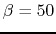
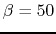

An inductive load is connected to a AC voltage source of 220 Volts (RMS) and 50 Hz. It is known that the average power is 1.1 kW and the power factor is . If the power factor is to be improved to 0.866 by including a capacitor in paralle with the load, what is the its capacitance?

Find the DC operating point  of the transistor circuit
given below, where
of the transistor circuit
given below, where
 ,
,
,
,
 ,
, and
,
, and  . If you find the DC operating point is not
in the middle of the linear region of the output characteristic plot,
modify
. If you find the DC operating point is not
in the middle of the linear region of the output characteristic plot,
modify  so that the DC operating point is in the middle of the linear
region (to maximize the dynamic range of the AC output).
so that the DC operating point is in the middle of the linear
region (to maximize the dynamic range of the AC output).

The circuit shown below is called Darlington transistor amplifier which is
composed of two transistors and with their collectors connected
and the emitter of connected to the base of . Assume  and both transistors have .
and both transistors have .